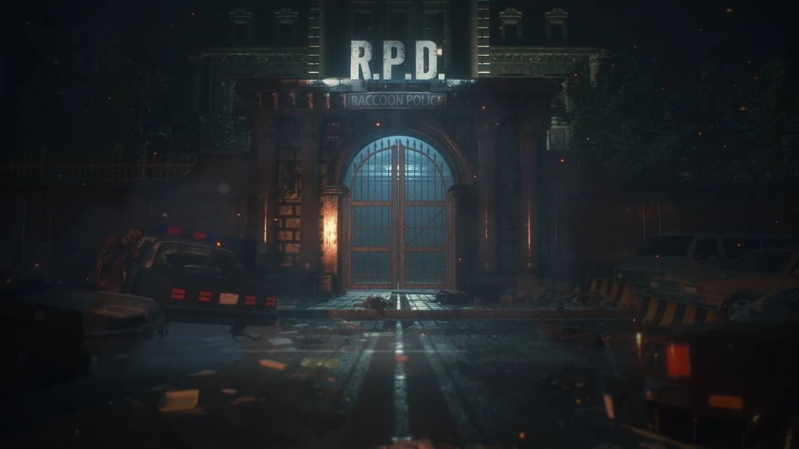

Racoon City Police Department

Games where RCPD appears in:
Resident Evil 3
Resident Evil 4
Movies where RCPD appears in:
Resident Evil: Welcome to Racoon City
Description:
The Raccoon City Police Department (RPD) is a fictional law enforcement
agency in the Resident Evil video game series, created by Capcom. It's
located in the heart of Raccoon City, a midwestern American town that
becomes the epicenter of a viral outbreak. The police department
operates out of a renovated art museum, giving the building an eerie,
elaborate design. It becomes a key setting in Resident Evil 2, where
players explore its dark, abandoned corridors while evading zombies and
other creatures. The RPD is notable for its central role in the events
leading up to the city's destruction.